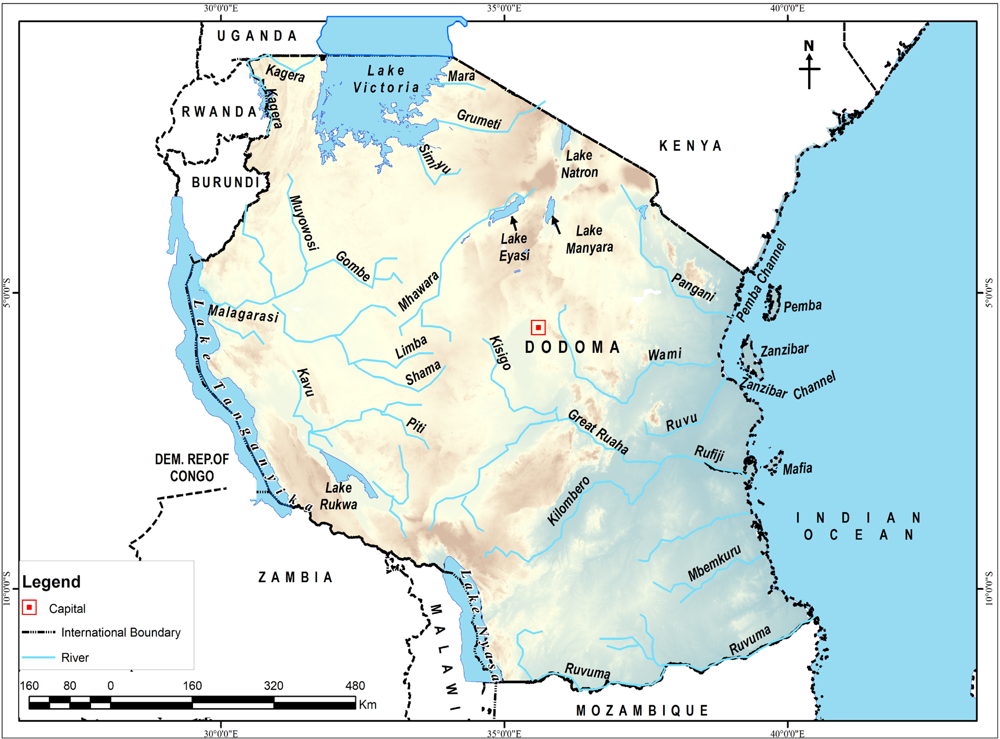

Lake Superior in North America is the world’s largest fresh water lake followed by Lake Victoria in East Africa. Lake Baikal in Russia is the deepest fresh water lake in the world followed by Lake Tanganyika found in Tanzania.

Figure 4.9: Major rivers and lakes in TanzaniaExercise 4.3
Assume that you are to organise an African festival about lakes and rivers of Tanzania.
What activities and cultural events would you include to showcase the importance of lakes and rivers to local people?
If Tanzania did not have major inland water bodies, what could have been the disadvantages?
Suggest possible alternative sources of water that could be used in the absence of major inland water bodies.
Activity 4.5
 Activity 4.5
Activity 4.5Choose one major water body in Africa with regard to Tanzania and East Africa.
Prepare information cards or posters of such a water body, including the name of the water body and interesting feature or characteristics of the water body, and thereafter illustrate the water body on the card or poster.
Explain how oceans interact with other water bodies on the planet Earth.